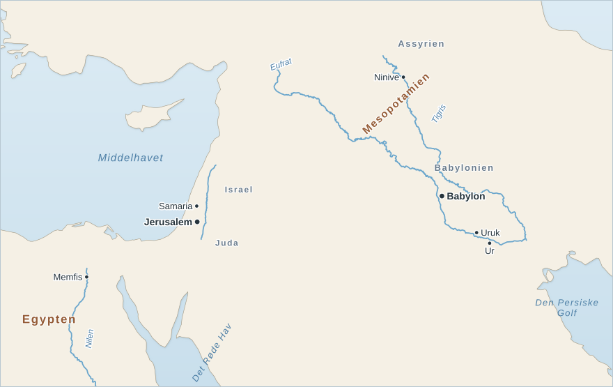
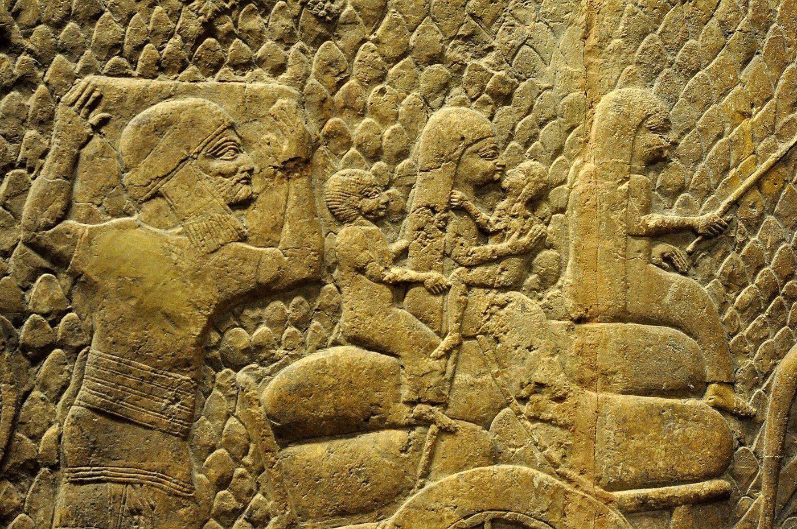

Et lille folk mellem stormagterne
Tillægsøvelse: baggrund til Ezekiels Bog 23
Læs teksten, så du kan svare på de tre fokusspørgsmål:
- Hvorfor var Israel og Juda i fare?
- Hvad skete der med Samaria i 722 fvt. og med Jerusalem i 587 fvt.?
- Hvorfor er det mærkeligt, at de bortførte judæere holdt fast i Jahve?
Luk teksten, og svar uden at kigge. Kan du ikke? Læs igen. Læs derefter Ezekiels Bog 23.
Vest for Mesopotamien, ved Middelhavets kyst, lå to små kongeriger. Mod nord lå Israel med hovedstaden Samaria, og mod syd lå Juda med hovedstaden Jerusalem. Folkene her tilbad guden Jahve, men mange ofrede også til andre guder. Deres historie står i Det Gamle Testamente i Bibelen.

Israel og Juda lå klemt mellem stormagterne. Mod syd lå Egypten, og mod øst lå skiftende riger i Mesopotamien. Små riger måtte vælge side og betale tribut, en fast afgift, til den stærkeste. Valgte de forkert, kom hæren.
Sådan gik det for Israel. Assyrien, en stormagt i det nordlige Mesopotamien, erobrede Samaria i 722 fvt. og førte tusindvis af indbyggere bort. Kongeriget Israel forsvandt.
Juda klarede sig længere. Omkring 600 fvt. var Babylon blevet den nye stormagt, og kongerne i Jerusalem skiftede mellem at holde med Babylon og at håbe på hjælp fra Egypten. I 597 fvt. indtog babylonierne Jerusalem og førte kongen og mange fra overklassen til Babylon. Da Juda gjorde oprør igen, kom de tilbage. I 587 fvt. brændte de Jerusalem og Jahves tempel. Tiden, hvor judæerne levede i Babylon, kaldes eksilet. Først efter 539 fvt., da perserne havde erobret Babylon, måtte de vende hjem.

Vi kender begivenhederne fra assyrernes egne indskrifter, fra en babylonisk krønike på en lertavle og fra Bibelen.
Mange folk i oldtiden mente, at deres gud kæmpede for dem. Tabte de en krig, kunne det se ud, som om guden havde tabt til fjendens guder. Alligevel holdt de bortførte judæere fast i Jahve. Hvordan kunne de det? Det er en af oldtidens gåder, og svaret skal findes i det, judæerne selv skrev.
Billeder: Kortet er tegnet til Historiebog efter Natural Earth. Relieffet fra Lakish, British Museum, foto Osama Shukir Muhammed Amin, Wikimedia Commons (CC BY-SA 4.0).